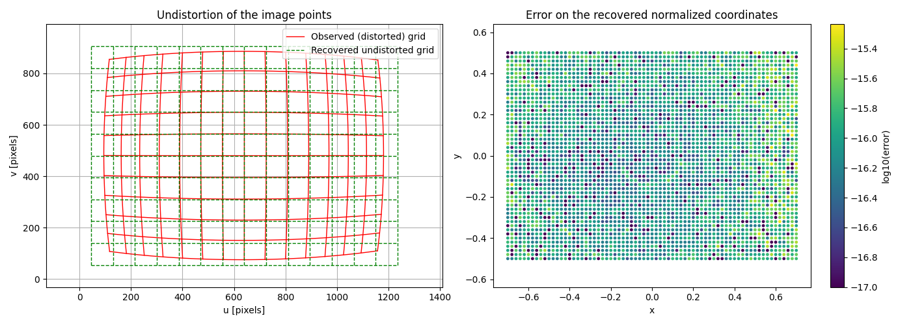

Note
Go to the end to download the full example code.
Undistortion of image points with a batch solver#
This example shows how to use pysolvegn.solve_batch() to solve a large number
of small independent least squares problems at once.
We consider the same camera model as in the camera calibration examples, but the problem is reversed: the camera parameters are known, and we look for the undistorted normalized coordinates \((x, y)\) of each observed (distorted) image point \((u, v)\).
The distortion model has no analytical inverse. Each image point therefore requires solving a small non-linear problem with 2 unknowns \((x, y)\) and 2 residuals. With \(N\) image points, we obtain \(N\) independent problems, which are solved together with a batch solver.
Camera model#
We use the Brown-Conrady camera distortion model.
For normalized coordinates (x, y), the distorted coordinates are:
where:
The pixel coordinates are:
The camera model below is vectorized: it computes the image coordinates of
n_points normalized points at once.
import time
import numpy as np
import matplotlib.pyplot as plt
import pysolvegn
np.random.seed(0)
def camera_model(camera_params, points):
"""
Compute distorted image coordinates.
Parameters
----------
camera_params : array-like
Complete camera parameter vector:
[fx, fy, cx, cy, k1, k2, p1, p2, k3]
points : ndarray
Normalized image points with shape ``(n_points, 2)``.
Returns
-------
ndarray
Image coordinates with shape ``(n_points, 2)``.
"""
fx, fy, cx, cy, k1, k2, p1, p2, k3 = camera_params
x = points[:, 0]
y = points[:, 1]
r2 = x**2 + y**2
radial = 1.0 + k1 * r2 + k2 * r2**2 + k3 * r2**3
x_distorted = x * radial + 2.0 * p1 * x * y + p2 * (r2 + 2.0 * x**2)
y_distorted = y * radial + p1 * (r2 + 2.0 * y**2) + 2.0 * p2 * x * y
u = fx * x_distorted + cx
v = fy * y_distorted + cy
return np.column_stack((u, v))
Jacobian with respect to the normalized coordinates#
Unlike the calibration examples, the unknowns are now the normalized coordinates \((x, y)\) of each point, and the camera parameters are constants.
Denoting \(R = 1 + k_1 r^2 + k_2 r^4 + k_3 r^6\) and \(R' = \frac{dR}{d(r^2)} = k_1 + 2 k_2 r^2 + 3 k_3 r^4\), the derivatives of the distorted coordinates are:
and the Jacobian of the pixel coordinates \((u, v)\) is:
The function returns one \(2 \times 2\) Jacobian per point, as an array with
shape (n_points, 2, 2).
def camera_model_jacobian(camera_params, points):
"""
Compute the Jacobian of the image coordinates with respect to the normalized
coordinates.
Returns
-------
ndarray
Jacobians with shape ``(n_points, 2, 2)``:
``J[k] = [[du/dx, du/dy], [dv/dx, dv/dy]]`` for the point ``k``.
"""
fx, fy, cx, cy, k1, k2, p1, p2, k3 = camera_params
x = points[:, 0]
y = points[:, 1]
r2 = x**2 + y**2
radial = 1.0 + k1 * r2 + k2 * r2**2 + k3 * r2**3
radial_prime = k1 + 2.0 * k2 * r2 + 3.0 * k3 * r2**2
dxd_dx = radial + 2.0 * x**2 * radial_prime + 2.0 * p1 * y + 6.0 * p2 * x
dxd_dy = 2.0 * x * y * radial_prime + 2.0 * p1 * x + 2.0 * p2 * y
dyd_dx = 2.0 * x * y * radial_prime + 2.0 * p1 * x + 2.0 * p2 * y
dyd_dy = radial + 2.0 * y**2 * radial_prime + 6.0 * p1 * y + 2.0 * p2 * x
J = np.empty((points.shape[0], 2, 2))
J[:, 0, 0] = fx * dxd_dx
J[:, 0, 1] = fx * dxd_dy
J[:, 1, 0] = fy * dyd_dx
J[:, 1, 1] = fy * dyd_dy
return J
Generate the distorted image points#
The camera parameters are known (same values as in the calibration examples).
We generate a dense grid of \(N\) normalized points, and compute the corresponding distorted image points. Only these image points are given to the solver: the normalized points are kept to check the result.
camera_parameters = np.array(
[
850.0, # fx
850.0, # fy
640.0, # cx
480.0, # cy
-0.20, # k1
0.05, # k2
0.001, # p1
-0.002, # p2
-0.01, # k3
]
)
fx, fy, cx, cy = camera_parameters[:4]
x = np.linspace(-0.7, 0.7, 71)
y = np.linspace(-0.5, 0.5, 51)
xx, yy = np.meshgrid(x, y)
normalized_points_true = np.column_stack((xx.ravel(), yy.ravel()))
image_points = camera_model(camera_parameters, normalized_points_true)
n_points = image_points.shape[0]
print("Number of independent problems:", n_points)
Number of independent problems: 3621
Check the Jacobian#
Before solving, we compare the analytical Jacobian with a finite difference approximation.
epsilon = 1e-7
J_analytical = camera_model_jacobian(camera_parameters, normalized_points_true)
J_numerical = np.stack(
[
(
camera_model(camera_parameters, normalized_points_true + epsilon * e)
- camera_model(camera_parameters, normalized_points_true - epsilon * e)
)
/ (2.0 * epsilon)
for e in np.eye(2)
],
axis=2,
)
print("Max Jacobian error:", np.max(np.abs(J_analytical - J_numerical)))
Max Jacobian error: 2.330503320990829e-06
Define the batch term#
Each problem \(k\) has 2 unknowns \(\mathbf{p}_k = (x_k, y_k)\) and 2 residuals:
With a pysolvegn.BatchTerm, the residual and Jacobian functions take:
params: the unknowns of themproblems still in processing, with shape(m, 2),indices: the indices of these problems in the batch, with shape(m,),
and return the residuals with shape (m, 2) and the Jacobians with shape
(m, 2, 2).
Important
m changes during the optimization, since the converged points are removed
from the processing. The observations of each problem must therefore be
selected with indices (image_points[indices]), never assumed to be the
full array.
def residual_function(params, indices):
return camera_model(camera_parameters, params) - image_points[indices]
def jacobian_function(params, indices):
return camera_model_jacobian(camera_parameters, params)
undistortion_term = pysolvegn.BatchTerm.from_rJ(
residual_func=residual_function,
jacobian_func=jacobian_function,
)
Solve all the problems at once#
The initial guess of each point ignores the distortion:
The initial parameters are stored in an array with shape (N, 2).
pysolvegn.solve_batch() returns a pysolvegn.BatchSolveResult:
result.success and result.n_iterations are arrays with one value per point.
initial_points = np.column_stack(
(
(image_points[:, 0] - cx) / fx,
(image_points[:, 1] - cy) / fy,
)
)
start = time.perf_counter()
result = pysolvegn.solve_batch(
terms=undistortion_term,
p0=initial_points,
max_iteration=20,
gtol=1e-10,
xtol=1e-12,
verbosity=2,
)
batch_time = time.perf_counter() - start
undistorted_points = result.parameters
print()
print("Converged points:", np.sum(result.success), "/", n_points)
print("Iterations per point: min", result.n_iterations.min(), "- max", result.n_iterations.max())
print("Max error on the normalized coordinates:",
np.max(np.abs(undistorted_points - normalized_points_true)))
print(f"Batch solver time: {batch_time:.3f} s")
Individual costs [rJ term]: C_i = 0.5 * ρ(||r_i||^2)
Cost: C = sum(w_i * C_i)
Step norm: ||Δp||
Optimality: ||g||
All the values are averaged over the N problems in processing.
Iteration N processing Total time (s) Cost C ΔC ||Δp||_2 ||g||_∞
0 3621 8.518e-04 2.885e+02 1.165e+04
1 3620 2.795e-03 1.384e-01 -2.884e+02 2.678e-02 1.628e+02
2 3620 4.667e-03 1.626e-07 -1.384e-01 4.472e-04 9.349e-02
3 3434 6.662e-03 1.376e-18 -1.715e-07 3.073e-07 1.222e-07
4 1315 7.833e-03 4.965e-27 -3.594e-18 1.114e-12 4.282e-11
5 39 8.253e-03 2.693e-27 -2.404e-26 3.692e-16 2.215e-11
3621/3621 problems converged.
[gtol] 3501 problem(s).
[xtol] 1441 problem(s).
Converged points: 3621 / 3621
Iterations per point: min 0 - max 5
Max error on the normalized coordinates: 5.551115123125783e-16
Batch solver time: 0.009 s
Comparison with a loop on the single solver#
The same result can be obtained by calling pysolvegn.solve() for each point,
but each call has its own Python overhead. The batch solver evaluates all the
problems in processing with a single call of the residual and Jacobian functions.
For the comparison, we only solve the first 200 points one by one.
n_loop = 200
start = time.perf_counter()
loop_points = []
for k in range(n_loop):
single_term = pysolvegn.Term.from_rJ(
residual_func=lambda p, k=k: camera_model(camera_parameters, p[None, :])[0] - image_points[k],
jacobian_func=lambda p: camera_model_jacobian(camera_parameters, p[None, :])[0],
)
single_result = pysolvegn.solve(
terms=single_term,
p0=initial_points[k],
max_iteration=20,
gtol=1e-10,
xtol=1e-12,
)
loop_points.append(single_result.parameters)
loop_time = time.perf_counter() - start
print("Same result as the single solver:",
np.allclose(np.array(loop_points), undistorted_points[:n_loop]))
print(f"Loop time for {n_loop} points : {loop_time:.3f} s")
print(f"Estimated loop time for {n_points} points : {loop_time * n_points / n_loop:.3f} s")
Same result as the single solver: True
Loop time for 200 points : 0.061 s
Estimated loop time for 3621 points : 1.097 s
Visualize the result#
Left: the observed distorted grid, and the undistorted grid recovered by the solver (one grid line out of 5), displayed in pixels with an ideal pinhole camera (\(u = f_x x + c_x\), \(v = f_y y + c_y\)).
Right: the error of the recovered normalized coordinates for each point.
undistorted_pixels = np.column_stack(
(
fx * undistorted_points[:, 0] + cx,
fy * undistorted_points[:, 1] + cy,
)
)
errors = np.linalg.norm(undistorted_points - normalized_points_true, axis=1)
fig, (ax_grid, ax_error) = plt.subplots(1, 2, figsize=(14, 5))
# Display one grid line out of 5 (the grid has shape (51, 71)).
grid_distorted = image_points.reshape(xx.shape + (2,))
grid_undistorted = undistorted_pixels.reshape(xx.shape + (2,))
def grid_lines(grid):
# Rows and columns of the grid, one line out of 5
return list(grid[::5, :]) + list(grid[:, ::5].transpose(1, 0, 2))
for index, line in enumerate(grid_lines(grid_distorted)):
ax_grid.plot(
line[:, 0],
line[:, 1],
color="red",
linewidth=1,
label="Observed (distorted) grid" if index == 0 else None,
)
for index, line in enumerate(grid_lines(grid_undistorted)):
ax_grid.plot(
line[:, 0],
line[:, 1],
color="green",
linewidth=1,
linestyle="--",
label="Recovered undistorted grid" if index == 0 else None,
)
ax_grid.set_title("Undistortion of the image points")
ax_grid.set_xlabel("u [pixels]")
ax_grid.set_ylabel("v [pixels]")
ax_grid.legend(loc="upper right")
ax_grid.grid()
ax_grid.axis("equal")
scatter = ax_error.scatter(
normalized_points_true[:, 0],
normalized_points_true[:, 1],
c=np.log10(np.maximum(errors, 1e-17)),
cmap="viridis",
s=6,
)
fig.colorbar(scatter, ax=ax_error, label="log10(error)")
ax_error.set_title("Error on the recovered normalized coordinates")
ax_error.set_xlabel("x")
ax_error.set_ylabel("y")
ax_error.axis("equal")
plt.tight_layout()
plt.show()

Total running time of the script: (0 minutes 0.247 seconds)